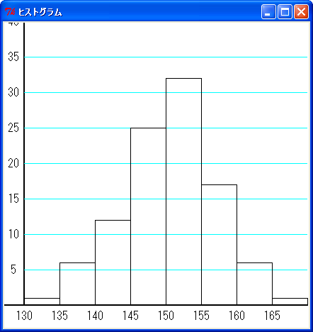
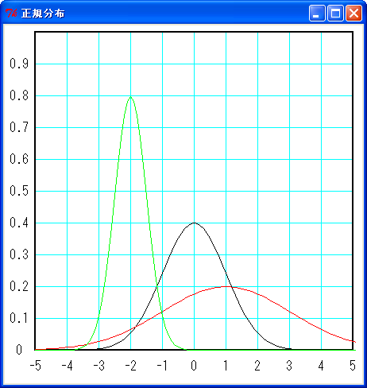
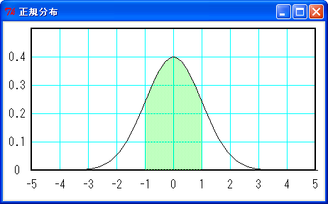
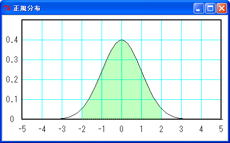
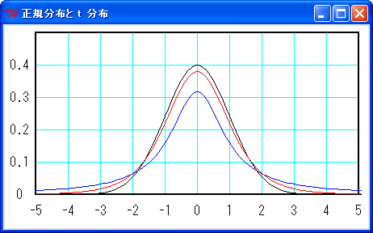

「統計学 (statistics) 」は幅広い分野で応用されている重要な学問ですが、複雑な数式や確率論が必要とされるため、統計学は難しいと思っている方は多いのではないでしょうか。実は M.Hiroi もそのように思っていたのですが、実際に勉強してみると、基本的なことはそれほど難しくありません。その基本的なところをまとめたものがこのページです。たいしたことはできませんが、興味のある方はお付き合いくださいませ。
なお、このドキュメントは統計学の素人が書いたものなので、内容に間違いがあるかもしれません。そのときは、メールでご指摘くださると助かります。また、このドキュメントおよび作成したプログラムは無保証であり、利用したことにより生じた損害について、作者「広井誠 (Makoto Hiroi) 」は一切の責任を負いません。あしからずご了承ください。
統計とは、社会や自然におけるいろいろな現象を数量的にはかって得られた数値のことです。たとえば、ある学年の生徒 100 人の身長を計測したとしましょう。ここでは、現実のデータではなく、乱数で作成した仮想的なデータを用います。
リスト : 身長のデータ
height = [
148.7, 149.5, 133.7, 157.9, 154.2, 147.8, 154.6, 159.1, 148.2, 153.1,
138.2, 138.7, 143.5, 153.2, 150.2, 157.3, 145.1, 157.2, 152.3, 148.3,
152.0, 146.0, 151.5, 139.4, 158.8, 147.6, 144.0, 145.8, 155.4, 155.5,
153.6, 138.5, 147.1, 149.6, 160.9, 148.9, 157.5, 155.1, 138.9, 153.0,
153.9, 150.9, 144.4, 160.3, 153.4, 163.0, 150.9, 153.3, 146.6, 153.3,
152.3, 153.3, 142.8, 149.0, 149.4, 156.5, 141.7, 146.2, 151.0, 156.5,
150.8, 141.0, 149.0, 163.2, 144.1, 147.1, 167.9, 155.3, 142.9, 148.7,
164.8, 154.1, 150.4, 154.2, 161.4, 155.0, 146.8, 154.2, 152.7, 149.7,
151.5, 154.5, 156.8, 150.3, 143.2, 149.5, 145.6, 140.4, 136.5, 146.9,
158.9, 144.4, 148.1, 155.5, 152.4, 153.3, 142.3, 155.3, 153.1, 152.3
]
数値を並べただけではデータの特徴を把握することは難しいので、これを表にまとめます。たとえば、130 cm から 5 cm 間隔でデータの個数を求めると、次のようになります。
| 階級 | 階級値 | 度数 | 累積度数 |
|---|---|---|---|
| 130 - 135 | 132.5 | 1 | 1 |
| 135 - 140 | 137.5 | 6 | 7 |
| 140 - 145 | 142.5 | 12 | 19 |
| 145 - 150 | 147.5 | 25 | 44 |
| 150 - 155 | 152.5 | 32 | 76 |
| 155 - 160 | 157.5 | 17 | 93 |
| 160 - 165 | 162.5 | 6 | 99 |
| 165 - 170 | 167.5 | 1 | 100 |
階級はデータの範囲を表します。この表では x cm 以上 y cm 未満を x - y で表しています。階級値は階級 x - y の中央値 (x + y) / 2 のことです。度数はその階級に出現したデータの個数です。度数を示してある表のことを「度数分布表」といいます。累積度数はその階級までの度数を全部加えたものです。累積度数を示してある表を「累積度数分布表」といいます。
そして、度数分布表を柱上のグラフで表したものを「ヒストグラム」といいます。次の図を見てください。

縦軸が度数で、横軸が階級です。150 cm 以上 155 cm 未満のデータが一番多く、そこから離れるほど度数は少なくなることが一目でわかります。
次に、このデータを要約することを考えます。つまり、そのデータの特徴を表す代表的な値を求めるのです。このような値を「要約値」といい、統計学では「統計量」といいます。すぐに思いつくのが「平均値 (mean) 」ですね。このほかに、総計量 (total)、最大値 (maximum)、最小値 (minimum)、中央値 (median)、最頻値 (mode) などがあります。
データを x1, x2, ... , xN とすると、総計量と平均値は次式で求めることができます。
総計量 T = x1 + x2 + ... + xN
N
= Σ xi
i=1
平均値 M = (x1 + x2 + ... + xN) / N
N
= (1/N) * Σ xi
i=1
平均値が同じ場合でも、データの特徴が異なる場合があります。たとえば、A = {4, 4, 5, 5, 5, 6, 6, 6, 7, 7} と B = {1, 2, 3, 4, 5, 6, 7, 8, 9, 10} の平均値は 5.5 になります。A のデータは平均値の近くに集まっていてますが、B のデータはバラバラになっていますね。統計学では、ばらつきの大きさを表すために「分散 (variance) 」という値を使います。分散の定義を次に示します。
分散 S2 = ((x1 - M)2 + (x2 - M)2 + ... + (xN - M)2) / N
N
= (1/N) * Σ (xi - M)2
i=1
標準偏差 S = √(S2)
分散の定義からわかるように、平均値から離れたデータが多いほど、分散の値は大きくなります。逆に、平均値に近いデータが多くなると分散は小さな値になります。そして、分散の平方根が「標準偏差 (SD : standard deviation) 」になります。標準偏差は、ばらつきの大きさを表すのによく使われています。
平均値と標準偏差を求めるプログラムは簡単です。次のリストを見てください。
リスト : 平均値と標準偏差
import math
def mean_sd(buff):
n = len(buff)
m = float(sum(buff)) / n
s1 = 0.0
for x in buff:
a = x - m
s1 += a * a
s1 = math.sqrt(s1 / n)
return m, s1
# test
if __name__ == '__main__':
a = [4, 4, 5, 5, 5, 6, 6, 6, 7, 7]
b = [1, 2, 3, 4, 5, 6, 7, 8, 9, 10]
for x in [a, b]:
print "MEAN = %g, SD = %g" % mean_sd(x)
プログラムは簡単なので、説明は不要でしょう。実行結果は次のようになります。
MEAN = 5.5, SD = 1.0247 MEAN = 5.5, SD = 2.87228
参考文献 [2] によると、データを 1 回通読するだけで平均値と標準偏差 (分散) を求めることができるそうです。参考文献 [2] のプログラムを Python で書き直すと、次のようになります。
リスト : 平均値と標準偏差 (2)
def mean_sd2(buff):
n = len(buff)
m = 0.0
s1 = 0.0
i = 0
for x in buff:
i += 1
x -= m
m += x / i
s1 += (i - 1) * x * x / i
s1 = math.sqrt(s1 / n)
return m, s1
計算結果は関数 mean_sd と同じになります。また、データ height の平均値と標準偏差を求めると、次のようになります。
MEAN = 150.627, SD = 6.4337
平均値は 150.63 cm で、標準偏差は 6.43 cm になりました。データの分布が「正規分布 (normal distribution) 」というもので近似できる場合、平均値±標準偏差の範囲内に 68.26 % のデータが分布し、平均値±(2 * 標準偏差) の範囲に 95.44 % のデータが分布します。
人の身長は正規分布に非常に近いことが知られているので、この学年の生徒の身長はだいたい 138 cm から 162 cm くらいであることがわかります。つまり、平均値と標準偏差から分布の様子がわかるわけです。正規分布についてはあとで詳しく説明します。
なお、度数分布表から平均値を求めることもできます。次の式を見てください。
k
平均値 M = (1/N) * Σ mi * fi
i=1
mi : 階級 i の階級値
fi : 階級 i の度数
k : 階級の総数
実際に計算すると平均値は 150.55 cm になります。実際の平均値とは一致しませんが、とても近い値になりますね。この値を用いてデータ処理を行うこともできます。
次は統計学で必要となる「確率 (probability) 」について簡単に説明します。たとえば、サイコロを考えてみましょう。今、サイコロを振って 1 の目が出たとします。確率論では、あることがらを試みることを「試行」といい、それによって起こりえる出来事を「事象」といいます。この場合、サイコロを振ることが試行で、1 の目が出たということが事象になります。そして、起こりうる全ての事象に対して、ある事象 E が起こる割合のことを確率といいます。確率は 0 から 1 までの数値で表すことができます。
サイコロの場合、6 つの事象があり、どれも同じ割合で起こると考えられます。したがって、各事象の確率は 1/6 になります。ここで、サイコロの出る目を変数 X で表すと、X のとる値は 1, 2, 3, 4, 5, 6 で、その確率が 1/6 ということになります。このように、変数 X に対応する確率が全て示されているとき、その変数を「確率変数」といいます。そして、確率変数に対応する確率のことを「確率分布」といいます。
サイコロのように確率変数がとびとびの値をとる確率分布を「離散型」といいます。いま、確率変数 X のとる値を x1, x2, ..., xn とし、対応する確率を p1, p2, ..., pn とすると、離散型の確率分布は次式のように表すことができます。
P{X = xi} = pi
P{X = xi} は、確率変数 X が値 xi のときの確率を表します。たとえば、サイコロの場合は次のようになります。
P{X = x} = 1/6, (x = 1, 2, 3, 4, 5, 6)
また、x1, x2, ..., xk までの確率の総和を「累積確率」といい、次の式で表します。
k
F(xk) = P{X <= xk} = Σ pi
i=1
n
F(xn) = Σ pi = 1
i=1
当然ですが、p1 から pn までの全ての確率の総和は 1 になります。サイコロの場合は次のようになります。
F(1) = 1 / 6 F(2) = 2 / 6 = 1 / 3 F(3) = 3 / 6 = 1 / 2 F(4) = 4 / 6 = 2 / 3 F(5) = 5 / 6 F(6) = 1
離散型の確率分布で代表的なものに「二項分布 (binomial distribution) 」があります。何回も繰り返すことができる試行があり、その事象が互いに独立のとき (相関性がないとき)、その試行を「独立反復試行」または「ベルヌーイ試行」といいます。ここで、ある事象 E が起こる確率を p とします。n 回の試行のうち事象 E が k 回起こる確率は次の式で求めることができます。
P{X = k} = nＣk * pk * (1 - p)n-k
k = 0, 1, 2, ..., n
この場合、事象 E が起こる回数 k が確率変数 X になります。この確率分布が二項分布で B(n, p) と表記します。n 回の試行で E が k 回起こる場合、最初に k 回連続して起こる場合もあるでしょうし、とびとびに起こる場合もあるでしょう。その個数は n 個の中から k 個を選ぶ組み合わせの数と同じになります。これを nＣk と表記します。あとは、E が k 回起こる確率 pk と、E が n - k 回起こらない確率 (1 - p)n-k を掛け算すればいいわけです。
また、k = 0 から n までの確率をすべて加算すると 1 になります。
n Σ nＣk * pk * (1 - p)n-k = 1 k=0
q = 1 - p とすると、上記の式は「二項定理」により (p + q)n になり、その値は 1 になります。
二項分布を求めるプログラムは簡単です。次のリストを見てください。
リスト : 二項分布
# 組み合わせの数
def comb(n, r):
if n == 0 or r == 0: return 1
return comb(n, r - 1) * (n - r + 1) / r
# 二項分布
def binomial(n, p):
t = 0.0
for k in xrange(n + 1):
b = comb(n, k) * p ** k * (1 - p) ** (n - k)
t += b
print "%d,\t%g,\t%g" % (k, b, t)
# test
if __name__ == '__main__':
binomial(5, 1/6.0)
関数 comb は組み合わせの数 nＣr を求めます。詳しい説明は拙作のページ 再帰定義 をお読みください。関数 binomial は二項分布を求めます。引数 n が試行回数で、引数 p が事象 E の起こる確率です。二項分布の定義をそのままプログラムしただけなので、説明は不要でしょう。
それでは簡単な実行例として、サイコロを 5 回振ったときに 1 の目が k 回出る確率を求めます。結果は次のようになりました。
回数 確率 累積確率 -------------------------------- 0, 0.401878, 0.401878 1, 0.401878, 0.803755 2, 0.160751, 0.964506 3, 0.0321502, 0.996656 4, 0.00321502, 0.999871 5, 0.000128601, 1
また、コインを 10 回投げて表が k 回出る確率は binominal(10, 0.5) で求めることができます。
回数 確率 累積確率 ----------------------------------- 0, 0.000976563, 0.000976563 1, 0.00976563, 0.0107422 2, 0.0439453, 0.0546875 3, 0.117188, 0.171875 4, 0.205078, 0.376953 5, 0.246094, 0.623047 6, 0.205078, 0.828125 7, 0.117188, 0.945313 8, 0.0439453, 0.989258 9, 0.00976563, 0.999023 10, 0.000976563, 1
確率 p が 1/2 のとき、二項分布を図で表すと左右対称のグラフになります。
確率変数が連続した値をとる確率分布を「連続型」といいます。簡単な例として「一様分布 (uniform distribution) 」を考えてみましょう。たとえば、Python のモジュール random のメソッド random() は、区間 [0, 1) の実数の一様乱数を生成します。実数の一様乱数とは、ある範囲の実数が等確率で現れる乱数のことです。
実数の一様乱数の場合、区間 [0, 1) を 10 等分すると、各々の小区間で乱数が現れる確率は 1 / 10 と考えることができます。100 等分すれば、確率は 1 / 100 になります。分ける区間を小さくすると、その確率は小さくなっていきます。それでは、X = 0.5 の確率はどうなるのでしょうか。実をいうと、この値は 0 になってしまいます。区間 [0, 1) 内の実数は無限個あるので、離散型確率分布と同じように確率を求めることはできないのです。
このため、連続型確率分布の場合は「確率密度」という考え方を用います。一様乱数は区間 [0, 1) で密度が一定の確率分布と考えるわけです。この場合、確率密度は 1 になります。区間 [0, 2) の一様乱数であれば、確率密度は 1/2 になります。そして、実際に確率を求めるときは、(区間の大きさ * 確率密度) で求めるわけです。これを数式で表すと、次のようになります。
┌
│ 0 : (x < a)
f(x) =│ 1 / (b - a) : (a <= x < b)
│ 0 : (b <= x)
└
区間 [a, b) の一様分布
関数 f(x) を「確率密度関数」または「密度関数」といいます。一般に f(x) には次の性質があります。
∞ ∫ f(x)dx = 1, f(x) >= 0 -∞
そして、X <= x の確率を求める関数 F(x) を「確率分布関数」または「分布関数」といいます。
x
F(x) = ∫ f(y)dy
-∞
一様乱数の場合、f(x) を積分して F(x) を求めると次のようになります。
┌
│ 0 : (x < a)
F(x) =│ (x - a) / (b - a) : (a <= x < b)
│ 1 : (b <= x)
└
区間 [a, b) の一様分布
一般に、密度関数は初等関数で表すことができても、それを積分した分布関数を初等関数で表すことは難しい場合があります。その場合は、数値積分で値を求めることになります。このため、連続型は密度関数で確率分布を表すことが多いようです。
連続型の確率分布の中で、最も重要なものが「正規分布」です。次の式を見てください。
f(x) = (1 / (√2π)σ) * exp(-(x - μ)2/(2σ)2)
これを平均μ、分散σ2 の正規分布といい、N(μ, σ2) と略記します。特に、N(0, 1) を「標準正規分布」といいます。正規分布は次の図に示すような釣鐘状の曲線 (ベル・カープ) になります。

黒線が N(0, 1)、赤線が N(1, 2)、緑線が N(-2. 0.5) です。正規分布は、平均値のデータが一番多く、分散の値が小さいほど平均値にデータが集まるので、ベル・カーブの頂点が高くなります。分散の値が大きくなると、ベル・カーブの頂点は低くなり裾野が広がります。ようするに、分散の値だけで正規分布の形が決まるわけです。
正規分布は次に示す加法性が成り立ちます。
また、正規分布は次式のように変数変換を行うと、標準の正規分布 N(0, 1) になります。
z = (x - μ) / σ f(z) = (1 / (√2π)) * exp(-z2/2)
このように、正規分布 N(μ, σ2) は標準正規分布 N(0, 1) に変換できるので、あらかじめ標準正規分布の確率分布を求めておくと便利です。たとえば、参考文献 1 には正規分布表が用意されていて、この表から標準正規分布の確率を求めることができます。このほかにも、Google などで検索すれば、正規分布表を公開している Web サイトが見つかるでしょう。
正規分布の場合、-σ < x < σ の確率が 68.26 % で、-2σ < x < 2σ の確率が 95.44 % になります。したがって、下図のように標準正規分布では -1 < z < 1 の確率が 68.26 % で、-2 < z < 2 の確率が 95.44 % になります。
 緑色の面積は全体の 68.26 %
 緑色の面積は全体の 95.44 %
このほかにも、いろいろな確率分布があります。興味のある方は 参考文献 1, 2 をお読みください。
正規分布 N(μ, σ2) は、平均値がμで分散がσ2 ですが、他の確率分布でも平均値と分散を求めることができます。平均値のことを期待値 (expectation) といって E(X) と表記します。
離散型の場合、確率変数のとる値を x1, x2, ..., xi, ... とし、その確率を p1, p2, ..., pi, ... とすると、E(X) は次のように求めることができます。
E(X) = Σ xi * pi = Σ xi * P{X = xi}
i i
分散は V(X) と表記し、X - E(X) の 2 乗の平均値として定義します。式で表すと次のようになります。
V(X) = E( (X - E(X))2 )
= Σ (xi - E(X))2 * P{X = xi}
i
確率変数 X, Y が互いに独立の場合 (相関性がない場合)、確率分布の平均値 E(X) には次の性質があります。
1 を「線形性」といいます。上記の式を使うと、分散 V(X) は次のようになります。
V(X) = E((X - E(X))2
= E(X2 -2XE(X) + (E(X))2)
= E(X2) - 2E(X)E(X) + (E(X))2
= E(X2) - 2(E(X))2 + (E(X))2
= E(X2) - (E(X))2
このように、分散の計算は簡単になりますが、参考文献 [2] によると、この式をそのままプログラムすると引き算で桁落ちが生じることがあり、分散を正しく求めることができない場合があるそうです。ご注意ください。
たとえば、サイコロを 1 回振る場合、その平均値と分散は次のようになります。
E(X) = 1 * 1/6 + 2 * 1/6 + 3 * 1/6 + 4 * 1/6 + 5 * 1/6 + 6 * 1/6
= 7 / 2
V(X) = (1 - 7/2) ** 2 * 1/6 + (2 - 7/2) ** 2 * 1/6 + (3 - 7/2) ** 2 * 1/6
+ (4 - 7/2) ** 2 * 1/6 + (5 - 7/2) ** 2 * 1/6 + (6 - 7/2) ** 2 * 1/6
= 35 / 12
または
V(X) = (1 + 4 + 9 + 16 + 25 + 36) / 6 - 49 / 4 = 91 / 6 - 49 / 4
= 35 / 12
二項分布の場合、公式 x * nＣx = n * n-1Ｃx-1 を使うと、平均値と分散は次のようになります。
n
E(X) = Σ x * nＣx * px * (1 - p)n-x
x=1
n
= np Σ n-1Ｃx-1 * px-1 * (1 - p)n-x
x=1
ここで x - 1 = y とおくと
n-1
= np Σ n-1Ｃy * py * (1 - p)n-1-y
y=0
= np * (p + (1 - p))n-1 = np
V(X) = E(X2) - (E(X))2
= E(X(X - 1) + X) - (E(X))2
= E(X(X-1)) + E(X) - (E(X))2
n
= Σ x(x-1) * nＣx * px * (1 - p)n-x + np - (np)2
x=1
n-2
= n(n-1)p2 * Σ n-2Ｃy * py * (1 - p)n-2-y
y=0
= n(n-1)p2 - np + (np)2 = np(1 - p)
連続型の場合、平均値と分散は次の式で定義されます。
∞
E(X) = ∫xf(x)dx
-∞
∞
V(X) = ∫(x - E(x))2f(x)dx
-∞
たとえば、一様分布の平均値と分散は次のようになります。
┌
│ 0 : (x < a)
f(x) =│ 1 / (b - a) : (a <= x < b)
│ 0 : (b <= x)
└
区間 [a, b) の一様分布
b
E(X) = ∫x / (b - a) dx = (b2 - a2)/ (2 * (b - a))
a
= (b + a) / 2
V(X) = E(X2) - (E(X))2
b
= ∫ x2/(b - a) dx - (b + a)2/4
a
= (b - a)2/12
実数の区間 [0, 1.0) の一様乱数の場合、平均が 1/2 で分散が 1/12 になります。
統計学では対象となる大きなデータの集合を「母集団 (population) 」といい、そこからいくつかデータを選ぶことを「サンプリング (sampling) 」、選んだデータの集合を「標本 (sample) 」といいます。
たとえば、日本人のある年齢の平均身長を求めることを考えてみましょう。該当する人全員の身長を計測すれば平均身長を求めることができますね。これを「全数調査」といいます。対象となる人が多くなると、全数調査は非常に困難な作業になってしまいます。そこで、一部の人を選んで身長を計測することにします。これを「標本調査」といいます。
標本調査の場合、対象となる人を偏りなく選ぶ必要があります。この方法を「無作為抽出 (random sampling) 」といい、選んだデータを「無作為標本 (random sample) 」といいます。そして、標本から得られた平均身長から母集団の平均身長を推定するわけです。
母集団の大きさを N とし、その値を θ1, θ2, ..., θN とします。すると、母集団の平均値μ、総計値τ、分散σ2 は次のようになります。
i
μ = (1/N) * Σ θi
i=1
i
τ = Σ θi
i=1
N
σ2 = (1/N) * Σ (θi - μ)
i=1
ここで、この母集団から大きさ n の標本を無作為抽出します。標本の中のデータの個数を「標本の大きさ」といいます。データを確率変数 X1, X2, ..., Xn で表すと、標本の平均値 m は次のようになります。
n
m = (1/n) * Σ Xi
i=1
m を標本平均といい、X のように X に上線を付けて表記する場合もあります。このページでは m と表記することにします。
標本平均 m の値は、母集団から無作為抽出されるデータによって変化します。N 個の中から n 個を取り出す組み合わせは NＣn 通りあるので、m の値も NＣn 通り考えることができます。その中には母集団の平均値μに近いものもあるでしょうし、μとの差が大きくなるものもあるでしょう。n がある程度大きい (n >= 30 程度) 場合、母集団の分布がどのようなものであっても、標本平均 m の分布は正規分布で近似することができます。これを「中心極限定理」といいます。
平均 μ 分散 σ2 の母集団から大きさ n (n >= 30) の標本を無作為抽出するとき、母集団がどのような分布であったとしても、その標本平均 m の分布は正規分布 N(μ, σ2/n) に従う。
母集団の大きさ N が十分に大きい場合、標本平均 m の平均値 E(m) と分散 V(m) は次のようになります。
E(m) = E((1/n) * (X1 + X2 + ... + Xn))
= (1/n) * (E(X1) + E(X2) + ... + E(Xn))
= nμ/n = μ
V(m) = V((1/n) * (X1 + X2 + ... + Xn))
X, Y が独立の場合、V(X + Y) = V(X) + V(Y), V(aX) = a2V(X) が成り立つので
= (V(X1) + V(X2) + ... + V(Xn)) / n2
= nσ2 / n2
= σ2 / n
E(m) は母集団の平均値μと一致します。V(m) は母集団の分散σ2とは異なり σ2 / n になります。そして、V(m) の平方根 σ/√n を「標準誤差 (Standard Error of Mean: SEM) 」といいます。標準誤差は主に平均値に対して使われる場合が多いので、略して SE と呼ばれています。
標準誤差は標準偏差と同じようにばらつきの大きさを表す値ですが、母集団の平均値μと標本平均 m との誤差を表していると考えることもできます。正規分布の場合、m は μ±2σ/√n の範囲に 95.44 % が入ります。つまり、n を大きくするほど、標準誤差は小さくなり、標本平均の値は真の平均値μに近づくわけです。
したがって、標本の大きさをある程度大きくとれば、その標本平均を母集団の平均値として扱ってもよいわけです。それでは分散の場合はどうなるのでしょうか。標本の分散は次のように求めることができます。
n
S2 = (1/n) * Σ (Xi - m)2
i=1
これは分散の定義そのままですね。標本から母集団の分散を推測する場合は、次の式を用います。
n
U2 = (1/(n - 1)) * Σ (Xi - m)2
i=1
U2 のことを「不偏分散」といいます。標本平均 m の平均値 E(m) は母集団の平均値 μ と一致します。このように、ある統計量の平均値が母集団のそれと一致することを「不偏統計量」といいます。不偏分散 U2 の平均値は母集団の分散 σ2 と一致します。標本分散では一致しないため、母集団の分散は不偏分散で推定します。
証明は次のようになります。
不偏分散
n
U2 = (1/(n - 1)) * Σ (Xi - m)2
i=1
ここで右辺を展開すると
n n n
Σ (Xi - m)2 = Σ (Xi2 - 2mXi + m2) = Σ Xi2 - 2m2 + m2
i=1 i=1 i=1
n
= Σ Xi2 - nm2
i=1
になる。この式の期待値を求めると
n n
E(Σ Xi2 - nm2) = Σ E(Xi2) - nE(m2)
i=1 i=1
になる。V(X) = E(X2) - (E(X))2 より右辺第 1 項は
n n
Σ E(Xi2) = Σ (V(Xi) + E(Xi)2 = n(σ2 + μ2)
i=1 i=1
となる。右辺第 2 項の E(m2) は
n n n
E(m2) = E((X1 + X2 + ... + Xn)2/n2) = E(Σ Xi2 + Σ Σ XiXj) / n2
i=1 i=1 j!=i
= ( n(σ2 + μ2) + n(n - 1)μ2 ) / n2
= σ2 / n + μ2
となる。よって不偏分散 U2 の期待値は
n n
E(U2) = E(Σ Xi2 - nm2) / (n - 1) = (Σ E(Xi2) - nE(m2)) / (n - 1)
i=1 i=1
= (nσ2 + nμ2 - σ2 - nμ2) / (n - 1)
= (nσ2 - σ2) / (n - 1)
= σ
となり、母集団の分散σと一致する。
それでは簡単な例を示しましょう。ある学年の生徒 10000 人の身長を計測し、そのデータを母集団とします。データは乱数で作ります。そこから、サンプリングを行って標本平均と不偏分散を求めます。プログラムは次のようになります。
リスト : 無作為抽出と不偏分散
import random
# 正規分布乱数の簡単な実装
def nrand():
n = 0.0
for _ in xrange(12):
n += random.random()
return n - 6.0
# 平均身長 150 cm, 標準偏差 6 程度のデータを作成する
def make_data(n):
buff = []
for _ in xrange(n):
buff.append(150 + 6.0 * nrand())
return buff
# 平均と分散
def mean_variance(buff):
n = len(buff)
m = float(sum(buff)) / n
s1 = 0.0
for x in buff:
a = x - m
s1 += a * a
return m, s1 / n
# 平均と不偏分散
def mean_variance1(buff):
n = len(buff)
m = float(sum(buff)) / n
s1 = 0.0
for x in buff:
a = x - m
s1 += a * a
return m, s1 / (n - 1)
# 無作為抽出
def random_sampling(buff, m):
n = len(buff)
sample = []
for i in xrange(n):
if (n - i) * random.random() < m:
sample.append(buff[i])
m -= 1
if m <= 0: break
return sample
# test
if __name__ == '__main__':
random.seed(1)
buff = make_data(10000)
print 'Population Mean = %g, Variance = %g' % mean_variance(buff)
m = 0.0
v = 0.0
for _ in xrange(10):
a, b = mean_variance1(random_sampling(buff, 30))
m += a
v += b
print 'Sample Mean = %g, Variance = %g' % (a, b)
print 'Mean avg %g, Variance avg %g' % (m / 10, v / 10)
関数 nrand は標準正規分布する乱数を生成します。random は実数の区間 [0, 1.0) の一様乱数を生成します。この分布の平均値は 1/2 で分散が 1/12 なので、乱数を 12 個足して 6.0 を引くと、その分布は平均 0 分散 1 の正規分布に近づきます。ただし、この方法は簡単ですが精度はあまりよくありません。正確な正規分布の乱数を発生する方法の一つに Box-Muller 法があります。興味のある方は 参考文献 [2] をお読みください。
関数 make_data は nrand を呼び出して、平均が 150 cm で標準偏差 6 cm 程度になるデータを作成します。関数 mean_variance は平均と分散を求めます。この関数で求めている分散は不偏分散ではありません。不偏分散は関数 mean_variance1 で求めます。
関数 random_sampling は buff から m 個のデータを無作為抽出します。基本的な考え方は簡単で、buff の先頭から順番にそのデータを選ぶか選ばないかを乱数で決めていきます。n 個の中から m 個のデータを選ぶので、最初の要素が選ばれる確率は m / n と考えることができます。したがって、実数の区間 [0, 1.0) の乱数 x を生成し、x < m / n であればその要素を選びます。そして、m の値を -1 します。残りの要素は n - i で表すことができるので、i 番目の要素が選ばれる確率は m / (n - i) になります。要素が選ばれない場合は、分母の値が小さくなるので、要素を選ぶ確率が大きくなっていくわけです。そして、m 個の要素を選んだら break でループを脱出します。
random_sampling のプログラムは 参考文献 [2] の「無作為抽出」を参考にしました。参考文献 [2] には他の方法も紹介されています。興味のある方はお読みください。
テストの実行結果は次のようになります。
Population Mean = 150.002, Variance = 36.4351 Sample Mean = 148.813, Variance = 23.9466 Sample Mean = 150.323, Variance = 46.3413 Sample Mean = 149.858, Variance = 32.0841 Sample Mean = 150.619, Variance = 42.2175 Sample Mean = 150.633, Variance = 42.0614 Sample Mean = 148.794, Variance = 31.0771 Sample Mean = 150.086, Variance = 33.9517 Sample Mean = 149.911, Variance = 34.8401 Sample Mean = 150.553, Variance = 33.9176 Sample Mean = 150.141, Variance = 43.5362 Mean avg 149.973, Variance avg 36.3974
母集団の平均は 150.002 cm で分散は 36.4351 になりました。関数 nrand は正規分布に近い乱数を生成していますね。今回のテストでは標本の大きさを 30 としました。その結果、標本平均は母集団の平均に近い値となりましたが、不偏分散の値はばらつきが大きいようです。標本平均と不偏分散の平均値を計算すると、母集団のそれと近い値になりました。
一般的には、サンプリングを 1 回行って、その結果から母集団の値を推定します。このとき、一つの値で母集団の値を推定することを「点推定」といい、値をある範囲 [low, high] で推定することを「区間推定」といいます。
標本の大きさ n が大きい場合、標本平均 m の分布は正規分布に従います。母集団の分散 σ2 が既知の場合、標準誤差 SE の値は σ/√n になります。したがって、母集団の平均値μが m ± SE の範囲内に入る確率は 68.26 % で、m ± (2 * SE) の範囲内に入る確率は 95.44 % と考えることができます。
たとえば、母集団の標準偏差が 6.0 であることが分かっていて、標本の大きさ 30 標本平均 148.8 の場合、母集団の平均値は [148.8 - 2*6.0/√30, 148.8 + 2*6.0/√30] = [146.61, 150.99] の範囲に 95.44 % の確率で入っています。この範囲を「信頼区間」といいます。
ここで、あらかじめ小さな確率αを定めておきます。そして、標本平均 m が入る区間の確率を 1 - α で表すことにすると、100 * (1 - α) % を「信頼係数」または「信頼度」といい、信頼度 100 * (1 - α) % の信頼区間を求めることが「区間推定」になります。なお、標本平均値 148.8 を母集団の平均値と推定する方法が「点推定」です。
一般に、αの値には 0.05 または 0.01 が選ばれます。標準正規分布の場合、正規分布表から 95 % の区間は (-1.96, 1.96) で、99 % の区間は (-2.58, 2.58) になります。なお、正規分布表は 0 から Z までの確率が掲載されています。95 % の信頼区間は、確率が 0.45 となる Z を求めることになり、その結果は 1.96 になります。
正規分布 N(μ, σ2) は変数変換により標準正規分布 N(0, 1) に変換できるので、母集団の標準偏差がσで、標本の大きさ n 標本平均 m における信頼度 95 % と 99 % の信頼区間は次のようになります。
95 % => [m - 1.96 * σ/√n, m + 1.96 * σ/√n] 99 % => [m - 2.58 * σ/√n, m + 2.58 * σ/√n]
σ = 6.0, m = 148.8, 標本の大きさ = 30 とすると、区間推定は次のようになります。
95 % => [146.65, 150.95] 99 % => [145.97, 151.62]
母集団の分散σ2 が未知の場合は、標本の不偏分散 U2 で代用します。たとえば、標本平均 m = 148.8, 不偏分散 23.95, 標本の大きさ 30 の場合、信頼度 95 % の信頼区間は次のようになります。
[148.8 - 1.96 * √(23.95/30), 148.8 + 1.96 * √(23.95/30)] = [147.05, 150.55]
n が大きくなるほど信頼区間の幅は狭くなり、母集団の平均値μに近づくことになります。
母集団の分布が正規分布で近似できる場合は、標本の大きさが少なくても「t 分布 (t distribution) 」を使って区間推定を行うことができます。t 分布の密度関数 f(x) は次式のようになります。
f(x) = Γ((ν + 1)/2) / (Γ(ν/2) * √(πν)) * (1 + x2/ν)-(ν+1)/2
∞
ここで Γ(x) = ∫ exp(-t) * tx-1 dt (ガンマ関数)
0
νは自由度といって、ν = 標本の大きさ - 1 になります。下図に t 分布を示します。

黒線が標準正規分布、青線が自由度 1 の t 分布、赤線が自由度 5 の t 分布です。t 分布は正規分布に似た形をしていますが、裾野が少しだけ広くなります。そして、ν -> ∞ で標準正規分布になります。
正規分布と同様に次の変数変換を行うと、変数 t は自由度 n - 1 の t 分布に従います。
t = (m - μ) / √(U2/n) m : 標本平均, μ : 母集団平均値, U2 : 標本の不偏分散, n : 標本の大きさ
したがって、自由度 n - 1 の t 分布において、信頼度 (1 - α) * 100 % の区間が (-tα, tα) とすると、標本の大きさ n, 標本平均 m, 不偏分散 U2 の信頼区間は次の式で表すことができます。
[m - tα * √(U2/n), m + tα * √(U2/n)]
簡単な例を示しましょう。ある学年の生徒 10 人を無作為抽出して、その身長を計測したところ、次のような結果になりました。
生徒 10 人の身長 151.6 158.6 144.9 158.8 149.5 146.1 152.5 162.8 150.3 149.1 標本平均 : 152.42 不偏分散 : 34.18
この学年の平均身長を区間推定してみましょう。標本の大きさが 10 なので、自由度νは 9 になります。t 分布表から自由度 9 で確率が 95 % になる区間を求めると (-2.26, 2.26) になるので、区間推定は次のようになります。
[152.42 - 2.26 * sqrt(34.18/10), 152.42 + 2,26 * sqrt(34.18/10)] = [148.24, 156.60]
母集団の中で、ある性質を持つものとそうでないものとに分けて、その割合を問題にする場合があります。ある性質のことを「属性」といい、その割合のことを「母比率」といいます。たとえば、工場での不良品の発生率や、身近なところでは TV の視聴率などがあります。
母集団の大きさが N とすると、母比率 p は次のように定義されます。
母集団の値 θi = 1 : 属性 A を持つ
0 : 属性 A を持たない
N
母集団の比率 p = (1/N) * Σ θi
i=1
N
母集団の分散 σ2 = (1/N) * Σ (θi - p)2
i=1
= E(X2) - (E(X))2
N
= (1/N) * Σ (θi)2 - p2
i=1
= (1/N) * (N * p * 1 + N * (1 - p) * 0) - p2
= p * (1 - p)
次に、母集団から無作為抽出を行います。標本の大きさを n として、標本の比率 pm を求めると次のようになります。
n
pm = (1/n) * Σ Xi = L / n
i=1
L は標本の中で属性 A を持つものの個数を表します。L / n を標本比率といいます。標本の期待値と分散は次のようになります。
E(pm) = E((1/n) * (X1 + X2 + ... + Xn))
= (1/n) * (E(X1) + E(X2) + ... + E(Xn))
= np / n = p
V(pm) = V((1/n) * (X1 + X2 + ... + Xn))
= (V(X1) + V(X2) + ... + V(Xn)) / n2
= np(p - 1) / n2
= p(p - 1) / n
母比率 p の母集団から大きさ n の標本を取り出して X = X1 + X2 + ... + Xn を求める場合、X は二項分布 B(n, p) に従います。ここで、n が十分に大きい場合、「ラプラスの定理」により X は正規分布で近似することができます。
確率変数 X が二項分布 B(n, p) に従う場合、n が十分に大きいときは正規分布 N(np, np(1 - p)) で近似される。
したがって、X の平均値は正規分布の加法性により N(p, p(1 - p)/n) で近似することができます。よって、標本比率 pm から母比率 p を推定する場合、その信頼区間は次のように求めることができます。
[pm - kα * √(p(1 - p)/n), pm + kα * √(p(1 - p)/n)] => [pm - kα * √(pm(1 - pm)/n), pm + kα * √(pm(1 - pm)/n)]
母比率 p は未知なので、代わりに pm を用いて計算します。n が十分に大きい場合、pm の標準誤差は小さくなる、すなわち母比率 p の値に近づくので、pm で代用することができるわけです。
簡単な例を示しましょう。サイコロを 600 回振ったところ、1 の目が 103 回出ました。1 の目が出る母比率の信頼区間を求めます。この場合、母集団の個数は無限大で、標本の大きさは 600 と考えることができます。標本比率 pm = 103/600 = 0.172 になるので、信頼度 95 % の信頼区間は次のようになります。
[0.172 - 1.96 * √(0.172(1 - 0.172)/600), 0.172 - 1.96 * √(0.172(1 - 0.172)/600)] = [0.142, 0.202]
もう一つ、簡単な例を示しましょう。一般家庭のテレビ 600 台を調査したところ、ある番組の視聴率が 15 % になりました。このときの信頼区間を信頼度 95 % で求めます。視聴率が 15 % なので、標本比率が 0.15 で標本の大きさが 600 になります。したがって、信頼区間は次のようになります。
[0.15 - 1.96 * √(0.15(1 - 0.15)/600), 0.15 - 1.96 * √(0.15(1 - 0.15)/600)] = [0.1214, 0.1786]
上記の参考文献は 統計科学のための電子図書システム で公開されています。優れた著作を公開されている脇本和昌様および関係各位に感謝いたします。